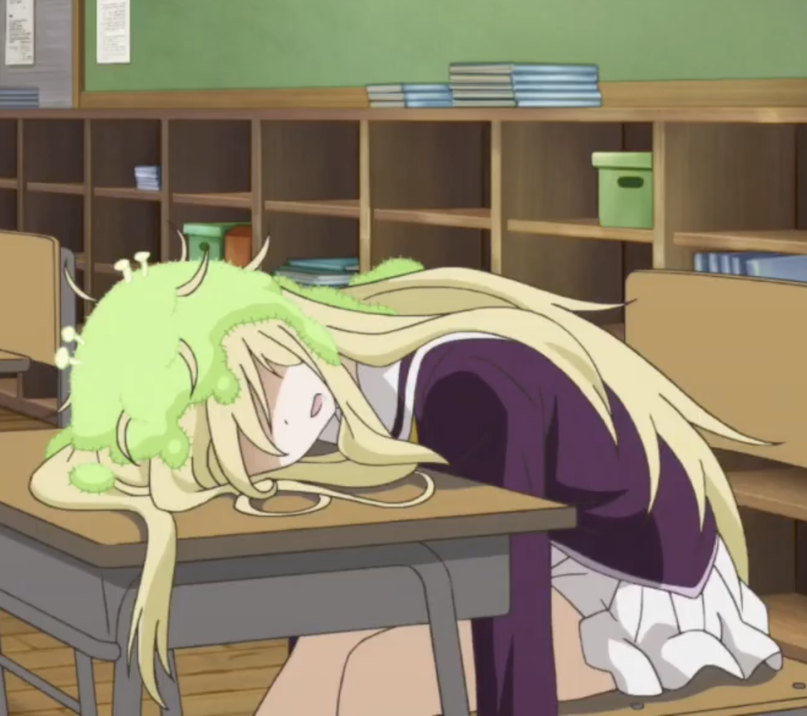

Sloth Girl

Miyubi Shishio
She is a female three-toed sloth known for her extremely slow pace and comedic "deaths" (passing out) when she exerts herself.
Statistics
- Species: Three-toed sloth (Therianthrope).
- Speed: 180 m/hr; she will pass out and "die" if she moves faster than normal, takes a bath or eats unfamiliar food.
- Stamina: Extremely low; overheating causes her to pass out.
- Special Abilities: She eats five grams of leaves per day, sometimes only consuming the moss that grows on her head.